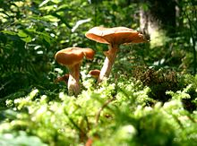

La Tierra es el quinto mayor
planeta del
sistema solar y el tercero
en orden de distancia al Sol.
Es el mayor de los planetas
telúricos o
interiores y el único lugar
del universo en el que se sabe
que existe vida.
Los rasgos más prominentes
del clima de
la Tierra son sus dos
grandes
regiones polares,
dos zonas
templadas relativamente
estrechas y una amplia
región ecuatorial,
tropical y subtropical.
Los patrones de precipitación
varían enormemente
dependiendo del lugar,
desde varios metros
de agua al año a menos de
un milímetro. Aproximadamente
el 70 por ciento de la
superficie terrestre está
cubierta por océanos de
agua salada.
El resto consiste en continentes
e islas, situándose la mayor
parte de la Tierra
habitable en el hemisferio norte.
La Tierra ha evolucionado mediante procesos
geológicos y biológicos que han
dejado vestigios de las condiciones originales.
La superficie externa se halla
fragmentada en varias placas tectónicas que se van
desplazando muy lentamente a
medida que avanza el tiempo geológico (si bien al
menos varias veces en la historia
han cambiado de posición relativamente rápido).
El interior del planeta permanece activo, con una
gruesa capa de materiales fundidos
y un núcleo rico en hierro que genera un potente
campo magnético. Las condiciones
atmosféricas han variado significativamente de las
condiciones originales por la presencia
de formas de vida, que crean un equilibrio ecológico
que estabiliza las condiciones de la
superficie. A pesar de las grandes variaciones
regionales del clima por la latitud y otros
factores geográficos, el clima global medio a
largo plazo está regulado con bastante precisión,
y las variaciones de un grado o dos en la temperatura
global media han tenido efectos muy
importantes en el equilibrio ecológico y
en la geografía de la Tierra.
Basándose en las pruebas disponibles, los científicos
han recabado información detallada acerca del
pasado del planeta.
Se cree que la Tierra se formó hace aproximadamente
4550 millones de años a partir de la nebulosa protosolar,
junto con el Sol y otros planetas. La Luna se formó
relativamente poco después (aproximadamente 20 millones de años
más tarde, hace 4530 millones de años).
Al principio fundida, la capa exterior del planeta
se enfrió, dando lugar a la corteza sólida.
Las emisiones de gases y la actividad volcánica formaron
la atmósfera primordial. La condensación del vapor de agua,
junto con el hielo de los cometas que en aquella época
impactaban con la Tierra, crearon los océanos. Se cree que la
química altamente energética produjo una molécula que se
autoduplicó hace aproximadamente 4000 millones de años.

Vida
El hecho de que las formas más básicas de vida vegetal
comenzaran a realizar la fotosíntesis fue clave para la
creación de condiciones que permitiesen el desarrollo
de formas de vida más complejas. El oxígeno resultante del
proceso se acumuló en la atmósfera y dio lugar a la capa de ozono.
La relación de simbiosis entre células pequeñas y
otras mayores dio lugar al desarrollo de células aún más
complejas llamadas eucariotas. Las células se agruparon en
colonias y comenzaron a especializarse, dando lugar a
auténticos organismos pluricelulares. Gracias a la capa de ozono,
que absorbe las radiaciones ultravioletas nocivas,
la vida colonizó la superficie de la Tierra.
Relación del ser humano con la naturaleza
El desarrollo de la tecnología por la raza humana ha permitido una mayor
explotación de los recursos naturales y ha ayudado a paliar parte de los
riesgos de los peligros naturales. No obstante, a pesar de este progreso,
el destino de la civilización humana está estrechamente ligado a los
cambios en el medio ambiente. Existe un complejísimo sistema de retroalimentación
entre el uso de la tecnología avanzada y los cambios en el medio ambiente,
que solo ahora se están comenzando a entender, aunque muy lentamente.
Los humanos emplean la naturaleza para actividades tanto económicas como
de ocio. La obtención de recursos naturales para el uso industrial sigue
siendo una parte esencial del sistema económico mundial. Algunas actividades,
como la caza y la pesca, tienen intenciones tanto económicas como de ocio.
La aparición de la agricultura tuvo lugar alrededor del noveno
milenio antes de Cristo. De la producción de alimentos a la energía,
no cabe duda de que la naturaleza es el principal factor de la riqueza económica.